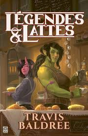

Légendes & Lattes
Auteur : Travis Baldree
Date de publication : 2022
Genre : Fantasy, Comédie, Aventure
Nombre de pages : Environ 320
Éditeur (VF) : Pocket
Format : Disponible en version papier et numérique
Prix moyen : Environ 15€ en version papier
Adaptations : Non
Pourquoi ce livre m'intéresse
Légendes & Lattes est une histoire de fantasy qui semble légère et agréable, idéale pour une lecture détente tout en étant immersive. Mélanger l'univers épique de la fantasy avec une ambiance cozy autour d’un café magique me semble être une idée originale et rafraîchissante. Ce livre semble parfait pour une lecture réconfortante.
De quoi ça parle ?
Le roman suit Viv, une ancienne guerrière qui, après avoir quitté son passé de combats et d’aventures, décide d’ouvrir un café. Située dans une ville pleine de créatures fantastiques, son café devient un point de rassemblement pour des personnages hauts en couleur. Bien que l’ambiance soit tranquille, Viv et ses amis devront affronter de nouveaux défis inattendus dans cette aventure teintée de magie et d’humour.
Analyse sans spoilers – Pourquoi lire Légendes & Lattes ?
1. Un cadre cosy et accueillant
L’univers de Légendes & Lattes propose une vision chaleureuse de la fantasy, avec des créatures fantastiques et un lieu de convivialité autour du café. L’atmosphère du livre contraste agréablement avec les univers plus sombres de la fantasy épique.
2. Des personnages attachants et une aventure légère
Les personnages, notamment Viv, sont bien développés et apportent une dimension humaine et comique à l’histoire. Le livre met en avant des relations amicales et les aventures quotidiennes plutôt que des batailles épiques, ce qui donne un ton rafraîchissant.
3. Une fantasy légère et accessible
Si tu cherches une histoire de fantasy qui ne se prend pas trop au sérieux et qui privilégie les moments de calme et de camaraderie, Légendes & Lattes est une excellente option. C’est un livre parfait pour ceux qui aiment une bonne dose de magie avec une touche de légèreté.
Thèmes abordés
- Amitié et camaraderie : Le livre explore l’importance des liens sociaux et de l’entraide entre amis dans un cadre fantastique.
- Reinvention de soi : Viv, l’héroïne, cherche à se reconstruire après avoir quitté son passé de guerrière, ce qui met en avant le thème de la réinvention personnelle.
- Magie et quotidien : Le mélange de magie et de vie quotidienne, avec un café comme lieu central, amène une réflexion sur comment la magie peut s’intégrer dans une vie ordinaire.
Ce que j’attends de ma lecture
Je m’attends à une lecture légère, agréable et pleine de charme, qui mêle magie et moments de réconfort. Le côté cosy et l’humour des personnages devraient en faire une aventure rafraîchissante.
Pour qui est ce livre ?
Si tu cherches une histoire de fantasy détendue, sans trop de suspense ou de combats épiques, ce livre est fait pour toi. Il s’adresse à ceux qui apprécient un mélange de magie et de moments cosy avec des personnages attachants.